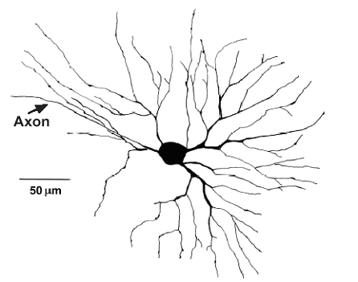
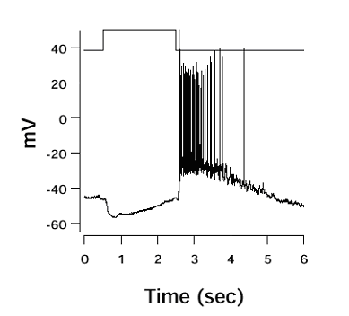

Masao Tachibana
Department of Psychology, Graduate School of Humanities and SociologyIn the visual system, nearby neurons of similar functional type have a tendency to fire synchronously. Cross-correlation analysis of spike discharges recorded from pairs of neurons has revealed that the synchronized activity is frequently associated with oscillatory firing patterns. However, the underlying neural mechanisms and functions of synchronous oscillations are not well understood. The aim of our research is to analyze the mechanisms responsible for the synchronized oscillatory activities in the retina and to construct a mathematical model. Using the flat-mount as well as slice preparations we will record light-evoked responses from various retinal neurons to determine whether oscillations emerge from a pacemaker cell or a neuronal circuit, and how responses are synchronized. The physiological and morphological data will be incorporated into the model.
|  |  |
|
Fig. 1 Morphology of a dimming detector (the off-sustained type ganglion cell) in the frog retina (37k PNG image) |
Fig. 2 Morphology of a dimming detector (the off-sustained type ganglion cell) in the frog retina (15k PNG image) |